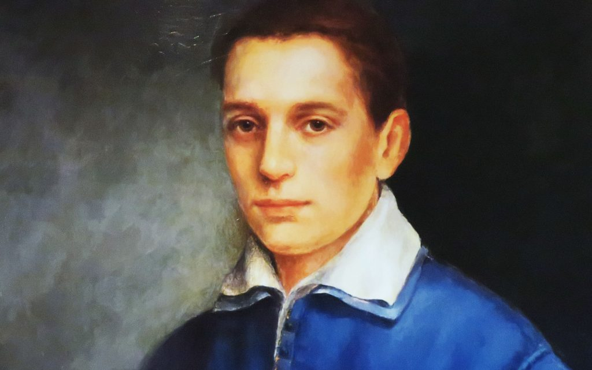
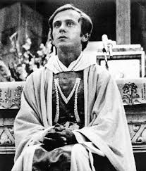
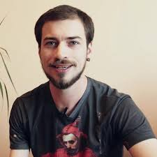
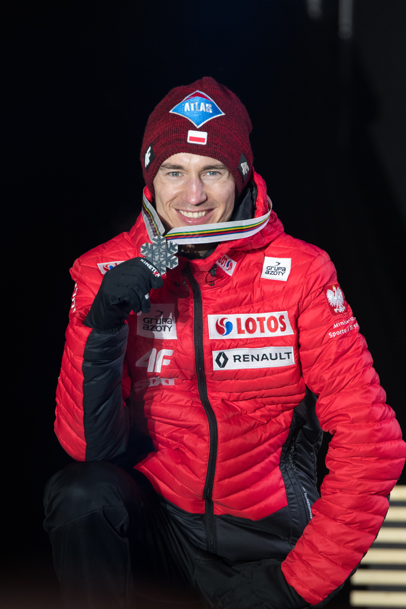

| Inspiracja-Osoba | Opis | Link |
|---|---|---|
|
Św. Stanisław Kostka  |
Stanisław urodził się 28 grudnia 1550 r. w Rostkowie.Niestety nie wiemy zbyt wielu szczegółów z jego młodości,ale pewne jest, że był wrażliwy. W wieku 14 lat razem ze swoim bratem, Pawłem, został wysłany do szkół jezuickich w Wiedniu. Początkowo Stanisławowi nauka nie szła zbyt dobrze,ale pod koniec trzeciego roku studiów należał już jednak do najlepszych uczniów. Wolny czas Stanisław spędzał na lekturze i modlitwie. W grudniu 1565 r. ciężko zachorował. Był pewien śmierci, a nie mógł otrzymać Komunii Świętej. Św. Barbara przyniosła mu Wiatyk.Zjawiła się też Najświętsza Maryja Panna z Dzieciątkiem, od której doznał cudu uzdrowienia i usłyszał polecenie, aby wstąpił do Towarzystwa Jezusowego. Jezuici jednak nie mieli zwyczaju przyjmować kandydatów bez zezwolenia rodziców, a na to Stanisław nie mógł liczyć.Zorganizował, więc ucieczkę, do której się starannie przygotował. Cała podróż była niezwykle ciężka i męcząca. Na szczęście w Dylindze Jezuici mieli swoje kolegium, gdzie Stanisław został przyjęty na próbę. Niestety dostał on dosyć nieciekawe zadania, ale ufał Bogu i sumiennie je wykonywał. Został on następnie wysłany do Rzymu. Został tam przyjęty jako nowicjusz, bardzo się cieszył, że jego marzenie w końcu się spełniło. W lutym 1568 r. Stanisław przeniósł się z kolegium Jezuitów, do domu św. Andrzeja na Kwirynale. W pierwszych miesiącach 1568 r. Stanisław złożył śluby zakonne. Miał wtedy zaledwie 18 lat. Wieczorem 10 sierpnia poczuł się bardzo źle. Po północy 15 sierpnia 1568 r. zmarł. Jego kult zrodził się natychmiast i spontanicznie. W 1606 r. papież uroczyście zatwierdził tytuł błogosławionego. Dekret kanonizacyjny wydał Klemens XI w 1714 r. Jednak z powodu śmierci papieża obrzędu uroczystej kanonizacji dokonał dopiero Benedykt XIV 31 grudnia 1726 r. Jan XXIII uznał św. Stanisława szczególnym patronem młodzieży polskiej. | brewiarz.pl |
|
ks. Jerzy Popiełuszko  |
Ks. Jerzy urodził się 14 września 1947 roku we wsi Okopy na Podlasiu. Jego rodzice Marianna i Władysław, prowadzili gospodarstwo rolne. Od 1961 roku uczył się w liceum w Suchowoli. Od dziecka był ministrantem, a podczas balu maturalnego ogłosił, że chce zostać kapłanem. Po maturze w 1965 roku wstąpił do Wyższego Seminarium Duchownego w Warszawie. W latach 1966-68 odbył służbę wojskową. Potem rozpoczęły się jego problemy zdrowotne. 28 maja 1972 r. został kapłanem. Przełomowym wydarzeniem w jego życiu była niedziela 31 sierpnia 1980 r., kiedy to zastąpił Kardynała Stefana Wyszyńskiego w Gdańskiej hucie. Od tego momentu jej pracownicy stali się bliskimi przyjaciółmi ks. Jerzego. Po wprowadzeniu stanu wojennego ks. Jerzy organizował masę działań charytatywnych. Stał się on prekursorem pielgrzymki robotników Huty „Warszawa” na Jasną Górę. Odbyło się to we wrześniu 1983 r. Przez to, że jego działalność była tak rozpoznawalna stał się on celem władz. Przykładowymi działaniami władz na jego niekorzyść były: przesłuchania, przeszukania domu, śledzenie i wiele innych. Od stycznia do czerwca 1984 roku był przesłuchiwany 13 razy. Miał też możliwość wyjazdu do Rzymu, ale z niej nie skorzystał. W nocy z 19-20 października 1984 r. został on brutalnie pobity, a następnie wrzucony do rzeki. Dokonali tego najpewniej funkcjonariusze UB. | popieluszko.rzeszow.pl |
|
Jan Mela  |
Jan Mela urodził się 30 grudnia 1988 r. w Gdańsku. Jest on polskim podróżnikiem oraz działaczem społecznym. W dzieciństwie, a dokładnie 24 lipca 2002 r., kiedy padał deszcz został poważnie porażony prądem po wejściu na teren stacji transformatorowej. Po trzech miesiącach pobytu w szpitalu zdecydowano się na amputację lewego podudzia oraz prawego przedramienia. W 2004 r. wraz z Markiem Kamińskim, Wojciechem Ostrowskim oraz Wojciechem Moskalem wybrali się na akcję „Razem na Biegun”. Akcja obejmowała zdobycie obydwu biegun w ciągu jednego roku. Wyprawa zakończyła się powodzeniem co spowodowało, że Jan Mela stał się najmłodszym zdobywcą obydwu biegunów w ciągu jednego roku oraz pierwszym niepełnosprawnym, który tego dokonał. W 2004 roku zyskał tytuł „Człowiek bez barier”. Jest również założycielem fundacji „Poza Horyzonty” oraz był ambasadorem „Światowych Dni Młodzieży 2016”. | zyciorysy.info |
|
Kamil Stoch  |
Kamil Wiktor Stoch syn Krystyny oraz Bronisława urodził się 25 maja 1987 w Zakopanem. Ma dwie siostry Annę i Natalię. Młody Kamil wychowywał się i uczył w miejscowości Ząb. Ukończył Szkołę Mistrzostwa Sportowego w Zakopanem, a potem Akademię Wychowania Fizycznego w Krakowie. W 2010 roku ożenił się Ewą Bilan. Na nartach zaczął jeździć już w wieku 3 lat, pierwsze skoki oddawał w wieku 4 lat. W 1993 r. dostał od wujka pierwsze narty. W wieku 8 lat zapisał się do klubu LKS Ząb . Początkowo trenował kombinację norweską. W 1996 r. regularnie stawał na drugim stopniu podium letniej edycji ligi szkolnej, zwyciężył także w jednym z konkursów. W grudniu wygrał eliminacje do Mistrzostw Makroregionu Małopolska, a następnie zwyciężył główne zawody na skoczni K-30 w kategorii „1987 i młodsi”. Potem odnosił jeszcze inne sukcesy, aż trafił do kadry narodowej. Ciężka praca i wytrwałość zaniosły go na bardzo wysoki poziom. Najbardziej znane sukcesy :2 Kryształowe Kule, zwycięzca Raw Air, 3-krotny Mistrz Olimpijski, 2-krotny zwycięzca Konkursu Czterech Skoczni ( z czego w jednym wygrał wszystkie 4 konkursy). | pl.wikipedia.org |
Dlaczego właśnie oni?
Każda z osób przedstawionych powyżej posiada cechy, które zachęcają mnie do działania lub też są godne naśladowania.
Św. Stanisław Kostka- Jego wrażliwość, wytrwałość i sumienność w wykonywaniu różnych zadań, którą pokazywał na każdym etapie życia jest dla mnie czymś wspaniałym. Kiedy mam okres, w którym nie chce mi się totalnie nic robić to przypominam sobie sumienność Św. Stanisława.
ks. Jerzy Popiełuszko- Jest to postać, która wywarła na mnie wielkie wrażenie od samego początku. Człowiek ten nie miał łatwego życia. Państwo próbowało tłumić wszystkie działania kościała. Ciągły stres spowodowany możliwością przesłuchań, wywarł napewno wielkie piętno na psychice kapłana, ale pomimo tak wielu trudności on i tak chciał pomagać i pełnić służbę kapłańską. Cechy, które najbardziej mi imponują to: odwaga oraz życzliwość.
Jan Mela- Człowiek, który nie ma ograniczeń. Moim zdaniem jest zdolny zrobić i zorganizować najtrudniejsze rzeczy. Pomimo wypadku, który dla wielu byłby powodem do depresji dalej realizował swoje marzenia. Pogodził się z tym co się stało (co już zasługuje na podziw), zdecydował się na udział w akcji „Razem na Biegun”. Należy też pamiętać o tym, że jest założycielem fundacji „Poza Horyzonty”, która pomaga osobom po amputacjach kończyn. Jego postawa zachęca zarówno do pomagania jak i samorozwoju.
Kamil Stoch- Jest to postać bardzo bliska mojemu sercu, ponieważ w sezonie zimowym oglądam większość konkursów w skokach narciarskich. Kamil zawsze imponował mi ze wzglęgu na samodyscyplinę jaką widać podczas jego skoków i treningów oraz wytrwałość w dążeniach do wyznaczonych celów.